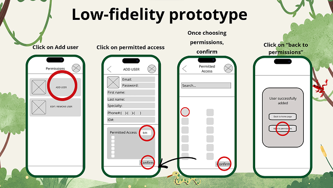
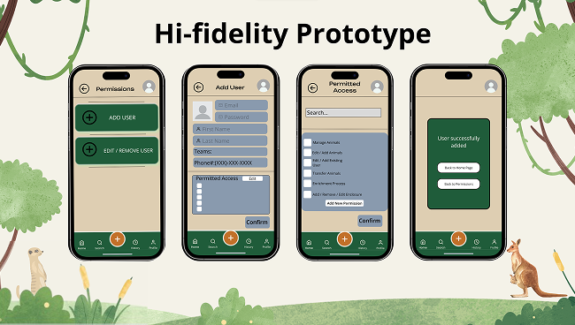
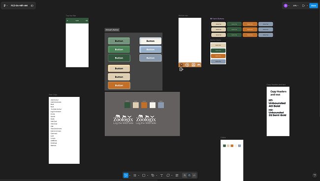
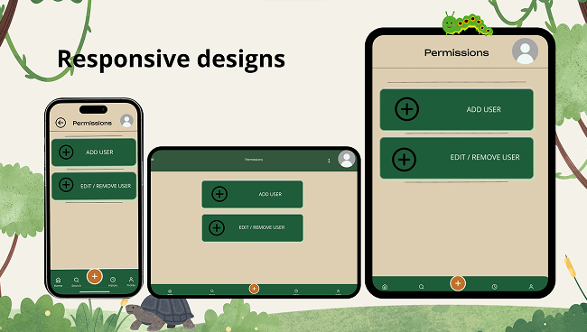
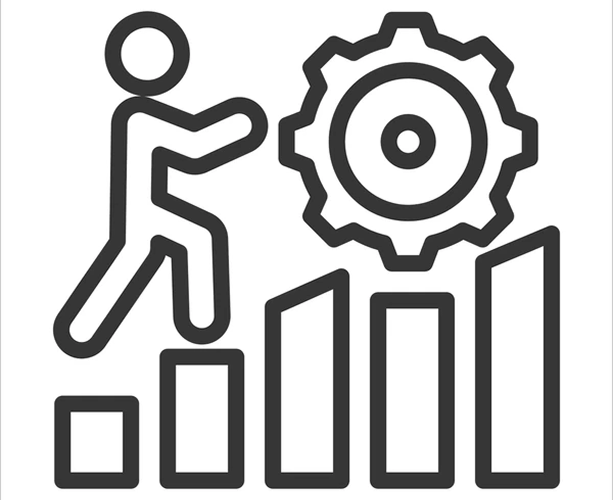

Website Images




Zoo Enrichment App Overview:
The class were tasked to create a new and improved enrichment tracking application for the Fresno Chaffee Zoo as the one they currently use is heavily outdated and hard to navigate. We split up into 6-7 groups each with a different user flow, I was in the users and permissions userflow.
Technology Used:
- We had used an application called Figma in which it allowed us to create digital lo-fi and hi-fi designs that would have been the blueprint of the actual website/app.
- We also used Figjam in where it held our brainstorming ideals, our information that we got from interviewing the Zoo Care Specialists, and our flow charts.


Concepts Learned:
- I had learned how to better use and design low-fi and hi-fi designs in figma such as dropdowns, interactive input fields, and interactive checkboxes.
- I had also learned how to gather better information from other people by coming up with questions and understanding how they thought.
Challenges & Solutions:
- A problem that I had while working on this problem were the communication issues. I would communicate with my group members but some would brush off my comments or concerns I had with the speed or quality of our work. To solve this problem I had discussed my problem with them and we all seemed to have a better understanding of each other after that.
- Another problem that I had while working was the uneven workload. Another member and I had more on our plates than the rest due to them not being productive members. To solve this problem, my peer and I had to urge and assign the members who were unproductive more tasks to balance the work load.
- Lastly, another problem I had faced was the roadblocks of members who would be sick or had a busy schedule. This was quite the challenge as the work would be unbalanced. To solve this problem, the member who was gone had to do some work on it at home. If not possible we all had to divide that members work amongst ourselves.

Habits of the mind in action
- Communication:We had a lot of communication and discussion about the assignment. Talking and communicating was a key part of this assignment which ended up being okay.
- Collaboration:Team effort and assisting each other when a part of the assignment needed the entire group.